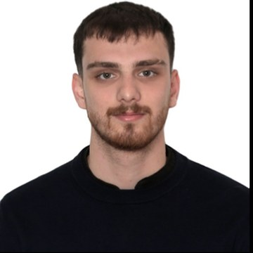

Kitefold Games
Kurucu, Bağımsız Mobil Geliştirici. App Store'da yayınlanan bulmaca oyunları.Founder, Independent Mobile Developer. Puzzle games published on the App Store.

Elektrik-Elektronik Mühendisliği · Sinyal İşleme · Makine ÖğrenmesiElectrical & Electronics Engineering · Signal Processing · Machine Learning
LinkedIn GitHub aemresrbyk@gmail.com İzmir, Türkiye
Kurucu, Bağımsız Mobil Geliştirici. App Store'da yayınlanan bulmaca oyunları.Founder, Independent Mobile Developer. Puzzle games published on the App Store.
Stajyer, Transformatör Test Laboratuvarı. Güç transformatörlerinin rutin ve tip testleri.Intern, Transformer Test Laboratory. Routine and type tests of power transformers.
Lisans, Elektrik-Elektronik MühendisliğiB.Sc., Electrical & Electronics Engineering
Önlisans, Yapay Zekâ Destekli KodlamaAssociate Degree, AI-Powered Coding
ESP32 ile EKG ve GSR toplama, filtreleme ve makine öğrenmesiyle sınıflandırma.ECG and GSR acquisition with an ESP32, filtering and machine-learning classification.
PCA, DCT ve otokodlayıcı karşılaştırması; geri besleme boyutunda 42,7 kat azalma.PCA, DCT and autoencoder compared; 42.7x reduction in feedback size.
Dengeli test setinde %97 doğruluk.97% accuracy on a balanced test set.